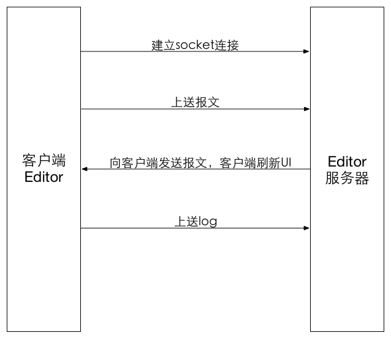

| 版本号 | 日期 | 作者 | 描述 |
|---|---|---|---|
| V1.0 | 2015.5.29 | 李浩(li.hao85) | 整体实现原理描述 |
| V1.1 | 2015.7.18 | 李浩(li.hao85) | 增加新的上送报文与接收报文协议、新的日志上送协议 |
| V1.2 | 2015.7.22 | 李浩(li.hao85) | 安卓的任务队列机制移到文章最后、增加对新旧两种报文解析协议的兼容性说明、对新增的外联css如何处理进行了说明 |
| V1.3 | 2015.8.23 | 李浩(li.hao85) | 增加服务器要求客户端单独执行Lua语句的功能说明 |
| V1.4 | 2015.9.11 | 李浩(li.hao85) | 增加对上送日志的分级规定 |

整个editor客户端部分包括如下的三个功能：
说明：
使用如下的一些基本信息socket连接，并标记socket连接长期存在(如：使用setKeepAlive(true)语句)：
如果没有建立连接，则弹框提示用户是否重连。当用户选择重连后，尝试新一轮的连接；当用户不再重新连接后，结束editor调试。
如果连接建立成功，则会保持这个连接，并做如下两件事：
以上的“等待”任务是通过开了不同的线程来实现的，不会导致UI卡死。
前提：与Editor服务器的socket连接已经建立。
客户端获得报文后，除了供框架自己解析用之外，还要将报文上传给Editor服务器一份，用于展示。
如果是从Editor服务器获得的返还报文(下一节描述的情况)，那么这段报文会带有一个donotsend的标记，有这个标记的话，就不必再次向Editor服务器发送报文了。这个donotsend标记是客户端自己规定的。
正常的话是从EWP服务器获得的报文，这种报文不带有donotsend标记，需要上送给Editor服务器。
一、上送报文内容：
二、上送报文格式【客户端->服务端】：
旧的报文传输协议见《数据传输协议old》，新的传输协议见《数据传输协议new》。
三、上送报文的时机：
页面上如果有slt脚本，则在使用slt脚本将获得的报文展开后，进行上传。
前提：与Editor服务器的socket连接已经建立。
socket连接建立后，会等待Editor服务器传送过来的报文，把这个报文加上donotsend标记，交给框架去解析。加上donotsend标记后，就不会再次上传这段报文了。
客户端的框架先去掉这个donotsend标记，再解析这个报文，把它转化成能够解析的格式，之后进行客户端的UI刷新。解析的内容有：
解析Editor报文格式【服务端->客户端】：
旧的报文传输协议见《数据传输协议old》，新的传输协议见《数据传输协议new》。
接收报文之后，需要用修改后的报文刷新客户端UI。
时机：上一部分中客户端获取了报文、外联样式和外联脚本后，用replace接口刷新。
刷新之前需要进行如下的工作：
有时候，Editor服务器会传回一段Lua脚本，命令客户端单独执行，即lua_console的功能。承载这段脚本的json字符串格式如下：
#s#{
"lua_console": "lua source code(经过Base64编码)"
}#e#
客户端接收到服务器传回的报文中，如果含有lua_console这种key，那么就需要单独执行对应的Lua脚本。步骤如下：
前提：与Editor服务器的socket连接已经建立。
上送日志的格式【客户端->服务端】：
旧的报文传输协议见《数据传输协议old》，新的传输协议见《数据传输协议new》。
此外对于上送的日志，采取分级的做法，对于不同的日志信息，指定不同的级别。目前的日志包括三种级别： 普通、警告、错误，分别用字母i、w、e来指代。各个级别日志中包含的内容如下：
另外，对于lua打印的日志，单独开辟一个前缀来传送：